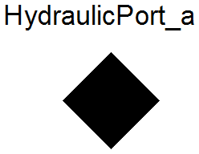
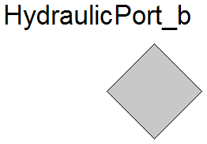
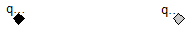

Hydraulical inflow connector

Connector with one flow signal of type Real.
Extends from HydraulicPort (Hydraulical connector with pressure and volumetric flow).
| Type | Name | Description |
|---|---|---|
| Pressure | pressure | Pressure [Pa] |
| flow VolumeFlowRate | q | Volume flow [m3/s] |
2009-2010
Marek Matejak, Charles University, Prague, Czech Republic
Hydraulical outflow connector

Extends from HydraulicPort (Hydraulical connector with pressure and volumetric flow).
| Type | Name | Description |
|---|---|---|
| Pressure | pressure | Pressure [Pa] |
| flow VolumeFlowRate | q | Volume flow [m3/s] |
Extends from Modelica.Icons.InterfacesPackage (Icon for packages containing interfaces).
| Name | Description |
|---|---|
| Hydraulical connector with pressure and volumetric flow | |
| HydraulicPort_a | Hydraulical inflow connector |
| HydraulicPort_b | Hydraulical outflow connector |
| OnePort | Hydraulical OnePort |
Hydraulical connector with pressure and volumetric flow
This connector connects hydraulic domains elements. The elements contains one equation for each his pressure-flow connector. The equation defines relation between variables in the connector. Variables are hydraulic pressure and volume flow of hydraulic medium. The pressure is the same in each connector that are connected together. The sum of flow in connectors connected together is zero (Kirchhoff's circuit laws).
| Type | Name | Description |
|---|---|---|
| Pressure | pressure | Pressure [Pa] |
| flow VolumeFlowRate | q | Volume flow [m3/s] |
| Author: | Marek Matejak |
| Copyright: | In public domains |
| By: | Charles University, Prague, Czech Republic |
| Date of: | january 2009-2013 |
Hydraulical OnePort

| Type | Name | Description |
|---|---|---|
| HydraulicPort_a | q_in | Volume inflow |
| HydraulicPort_b | q_out | Volume outflow |